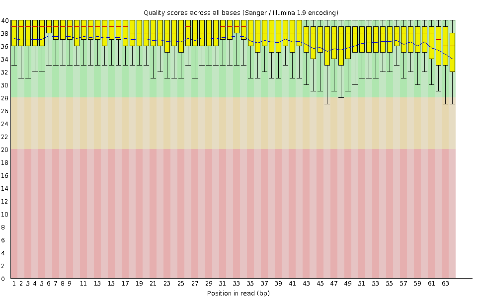
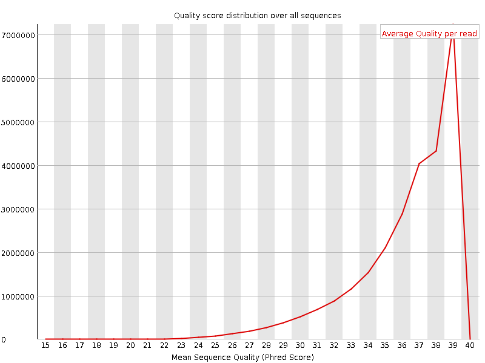
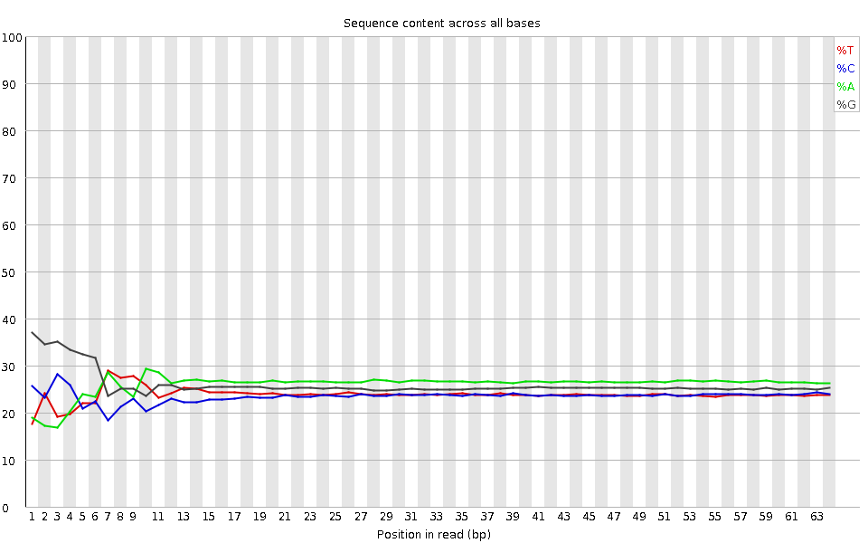
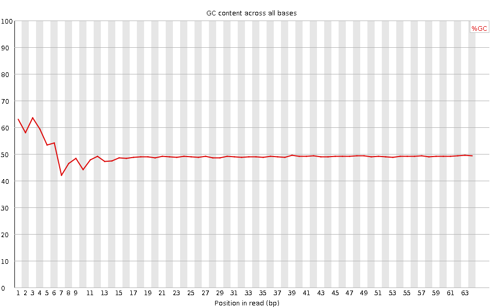
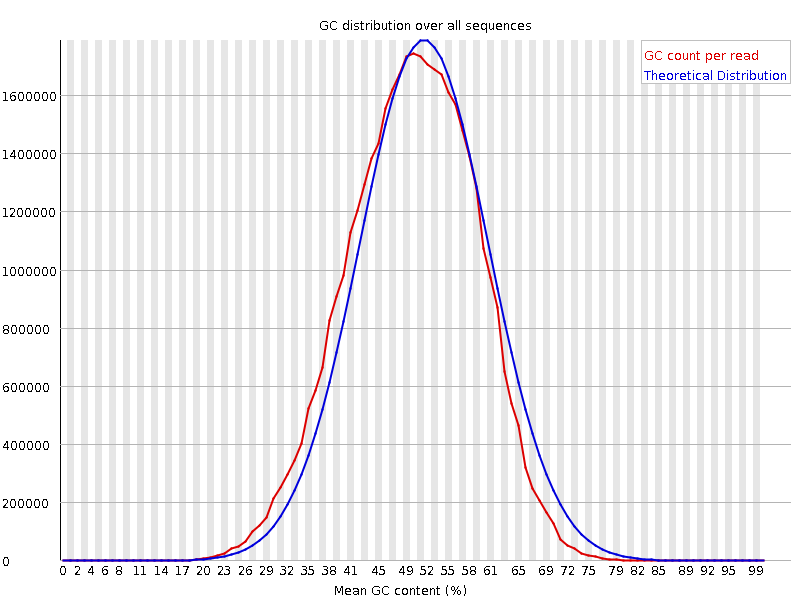
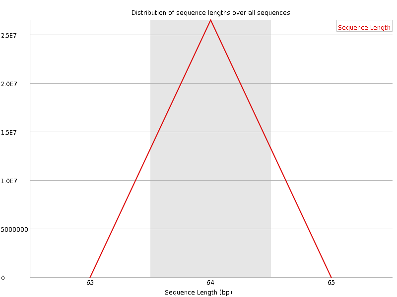
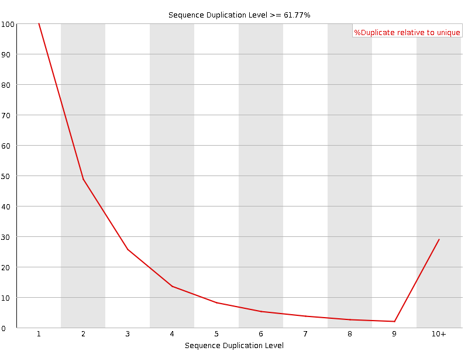

![[OK]](Icons/tick.png) Basic Statistics
Basic Statistics
| Measure | Value |
|---|---|
| Filename | SRR307924_pe_1.f.fastq |
| File type | Conventional base calls |
| Encoding | Sanger / Illumina 1.9 |
| Total Sequences | 26524875 |
| Filtered Sequences | 0 |
| Sequence length | 64 |
| %GC | 49 |
Per base sequence quality

Per sequence quality scores

![[WARN]](Icons/warning.png) Per base sequence content
Per base sequence content

![[FAIL]](Icons/error.png) Per base GC content
Per base GC content

Per sequence GC content

Per base N content

Sequence Length Distribution

Sequence Duplication Levels

Overrepresented sequences
No overrepresented sequences
Kmer Content

| Sequence | Count | Obs/Exp Overall | Obs/Exp Max | Max Obs/Exp Position |
|---|---|---|---|---|
| CTGGG | 3390210 | 2.1003714 | 6.521156 | 1 |
| GGCTG | 3265950 | 2.0233872 | 5.5050483 | 1 |
| GCTGG | 3233120 | 2.0030477 | 5.7431374 | 1 |
| GGCAG | 3342620 | 1.8969128 | 5.288579 | 2 |
| GGGAG | 3250560 | 1.6676092 | 5.5695734 | 2 |
| GGGCA | 2836925 | 1.6099347 | 5.016183 | 1 |
| TGGGG | 2656695 | 1.4879451 | 5.7628226 | 1 |
| GTGGG | 2621090 | 1.4680036 | 7.4153204 | 1 |
| GGGGA | 2601875 | 1.3348194 | 6.1654997 | 1 |
| GGGGT | 2134920 | 1.1957126 | 5.7587905 | 2 |
| GGGGG | 2194655 | 1.1286938 | 6.411423 | 1 |